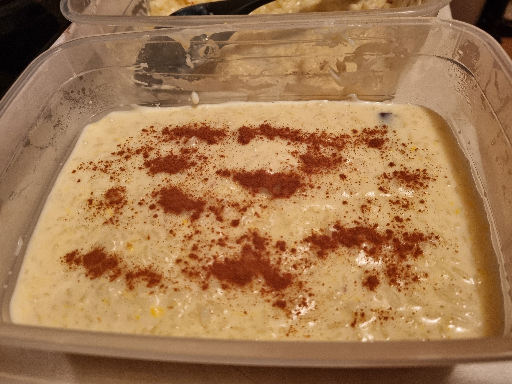

Sweet Rice

Delicious and comforting dessert
This delicacy takes little time to make and it is tasty
Ingredients
- 1 mug of rice
- 2 mugs of water
- 500 ml of milk
- 2 lemon zests
- 1 cinnamon stick
- 1 teaspoon of butter
- 370 g of condensed milk
- 3 egg yolks
- 1 pinch of salt
- Powdered cinnamon
Steps
- Cook the rice with the water until it's ready
- Add the milk, condensed milk, butter, lemon zests, cinnamon stick to the rice and mix them until the rice gets a creamy consistency
- Add a pinch of salt and mix the rice a bit more
- On the side, mix the egg yolks
- Remove the rice from the heat and add the eggs yolk mix to the rice, add it slowly while stirring the rice at the same time
- Put the rice back on the heat for 1-2 minutes while stirring it
- Put the rice on a container and add powdered cinnamon on top of it